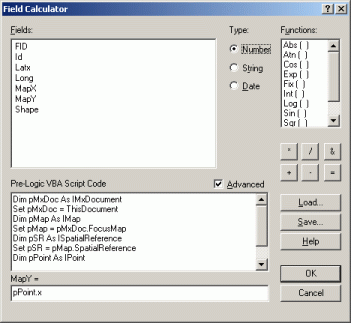

Getting main spatial characteristics of objects in ArcGIS
The article is answering the question how to get main spatial characteristics of the features which are associated with their geometry. No additional extensions or software in needed.
Following geometry types and relative spatial characteristics are covered:
Object type |
Spatial characteristics |
Link |
Point |
X coordinate |
|
Line |
Length |
|
Polygon |
Length (perimeter) |
Those who used software like Mapinfo, probably noticed, that there are no easy way to click and see spatial characteristics of the feature, area of the polygon or coordinates of the point. In ArcGIS it is impossible to find out feature's spatial characteristics simply by selecting it. However, while it seems to be inconvenient, there is certain logics in this.
The reason is that visual inspection of the feature spatial characteristics doesn't make any sense. More useful is getting feature geometry data into the attribute table and work with the numbers there. It is also possible if needed to organize continuous monitoring and update of attributive values related to the changing feature geometry. This approach is used in Arcinfo Workstation which is working with the data in its own - coverage format. This can make sense if you are caring out a series of spatial operations and need to track changes in spatial characteristics.
Again, spatial characteristics are properties of features geometry. In Arcview GIS and ArcGIS shapefile format it is possible to get it via special Shape field, which provide link for geometry from the table and can be used for extracting some data from it.
While calculating spatial characteristics it is important to remember, that units of result will be the same as internal units of the source features. So:
- If data is in geographic coordinate system, then after extracting spatial characteristics data the result will be in decimal degrees, while dataframe can have or have no projection set up (this is acceptable for points coordinates, but not for lengths and areas).
- If data is in the unknown coordinate system, then calculation can still be carried, but the resulting units will remain unknown also.
Further you can how it is possible to get metric data about spatial characteristics even if your data is internally unprojected (being in geographic coordinate system), while dataframe projection is set up. For such calculation it is important to remember what projected coordinate system was used for calculations, as in different projections the results will vary.
So for updating your feature attributes table for all objects at once you need:
1. Open attributes table by right clicking on the layer, for objects of which you need to calculate spatial characteristics, choose Open Attribute Table
2. Create field or fields of integer of floating format depending on type of characteristic you want to calculate. Options\Add Field...
3. Choose data entry instrument by right clicking on field header and choosing Calculate Values...

4. In the Field Calculator window switch on Advanced mode
5. In newly appeared Pre-logic VBA Script Code field enter one of the following expressions, which will get spatial characteristic data from shape field which hold geometry of the object.

Area
Expression for getting spatial characteristic data in the internal units and coordinate system of the layer. Layer and dataframe can be either in geographic or projected coordinate system, the result will be the same, as it is not dependent on dataframe coordinate system/units:
Dim pArea as IArea
Set pArea = [shape]
Output = pArea.area
To repeat, this query will not give sound results if your data is initially in geographic projection and it doesn't matter if your dataframe is projected or not. However, if you are working with vector data which is already projected, using these expression can save a lot of time.
For getting spatial characteritics in metric system using data stored in geographic coordinate system and projected of the fly using ArcGIS capabilities, it is needed to modify the expression this way:
Set pMxDoc = ThisDocument
Dim pMap As IMap
Set pMap = pMxDoc.FocusMap
Dim pSR As ISpatialReference
Set pSR = pMap.SpatialReference
Dim pPolygon As IPolygon
Dim pArea as IArea
Set pPolygon = [Shape]
pPolygon.Project pSR
Set pArea = pPolygon
Output = pArea.area
In the last textbox, in the header of which we have "area =" text, you need to put output. Output is the name of the variable, that contains the result of the calculation for each record (=feature).
Area is the name of the field in which the results of calculate will be stored, you can use other field name.
Perimeter
Expression for unprojected dataframe, data can be either in geographic or projected coordinate system:
Dim pCurve as ICurve
Set pCurve = [shape]
Output = pCurve.Length
Expression for projected dataframe, data can be either in geographic or projected coordinate system, the resulting spatial characteristics value will be calculated in the projected units and using the projection of the data frame:
Set pMxDoc = ThisDocument
Dim pMap As IMap
Set pMap = pMxDoc.FocusMap
Dim pSR As ISpatialReference
Set pSR = pMap.SpatialReference
Dim pCurve As ICurve
Set pCurve = [Shape]
pCurve.Project pSR
Output = pCurve.Length
In the last textbox, in the header of which we have "perimeter =" text, you need to put output. Output is the name of the variable, that contains the result of the calculation for each record (=feature).
Perimeter is the name of the field in which the results of calculate will be stored, you can use other field name.
Length
Expression for unprojected dataframe, data can be either in geographic or projected coordinate system:
Dim pCurve as ICurve
Set pCurve = [shape]
Output = pCurve.Length
Expression for projected dataframe, data can be either in geographic or projected coordinate system, the resulting spatial characteristics value will be calculated in the projected units and using the projection of the data frame:
Set pMxDoc = ThisDocument
Dim pMap As IMap
Set pMap = pMxDoc.FocusMap
Dim pSR As ISpatialReference
Set pSR = pMap.SpatialReference
Dim pCurve As ICurve
Set pCurve = [Shape]
pCurve.Project pSR
Output = pCurve.Length
In the last textbox, in the header of which we have "length =" text, you need to put output. Output is the name of the variable, that contains the result of the calculation for each record (=feature).
Length is the name of the field in which the results of calculate will be stored, you can use other field name.
Coordinates
For getting coordinates, 2 field are needed to be created and 2 expression used, one for latitude and one for longitude.
Expression for unprojected dataframe, data can be either in geographic or projected coordinate system:
For longitude:

Set pPoint = [Shape]
output = pPoint.x
In the last textbox, in the header of which we have "long = " text, you need to type in output.
For latitude:
Set pPoint = [Shape]
output = pPoint.y
In the last textbox, in the header of which we have "lat = " text, you need to type in output.
Expression for projected dataframe, data can be either in geographic or projected coordinate system, the resulting spatial characteristics value will be calculated in the projected units and using the projection of the data frame:
Set pMxDoc = ThisDocument
Dim pMap As IMap
Set pMap = pMxDoc.FocusMap
Dim pSR As ISpatialReference
Set pSR = pMap.SpatialReference
Dim pPoint As IPoint
Set pPoint = [Shape]
pPoint.Project pSR
In the last textbox, in the header of which we have "long =" or "lat =" text, you need to type in pPoint.x или pPoint.y respectively.
Lat and long are the names of the fields in which the results of calculate will be stored, you can use other field names.
This expressions show how spatial data can be queried to get and modify certain characteristics about it, both spatial and attributive, for such editing Calculate with VBA language expressions are used in ArcGIS.
Дата создания: 20.02.2006
Автор(ы): Максим Дубинин